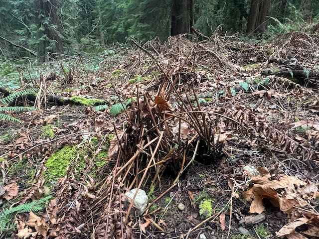

Help Fund Research into the Regional Sword Fern Die-Off

Sword Fern Die-Off
Sword ferns live an unusual life. They take root under open skies on
mineralized soil, before the forest canopy forms above them.
They rarely reproduce below that canopy. Instead they live very long
lives. They exhibit full recovery even after years of extended
drought.
Dr. David Barrington. I very much like the idea that they are old individuals, established
at a remote time when there was disturbance in the forest. Fire would
create such a disturbance. As to age, 1000 years is not out of the
question, possibly much longer but there are no data at all for
deciding. There are very few sites for the establishment of new plants
via gametophyte in the stable mature forests of the Northwest, though
a single treefall would create such an opportunity. Polystichum
munitum is essentially unbranched, which lends support to the idea
that the populations are made up of independently originated
individuals, not fragments of some giant clone.
Seward Park's old-growth forest is celebrated by Seattleites for its lush forest dominated
by native plant species like sword fern. In autumn of 2013, park
visitors noticed sword ferns dying on the south side of the Hatchery
Trail. By July of 2014, the stand of dense sword ferns (about a 1/4
acre in size) was more than 90% dead, leaving bare ground. In
subsequent years, the decline has spread substantially through the
park.
Sword ferns are now dead in a 15-acre area (about 10% of the
old-growth forest in the park) and in isolated patches across Bailey
Peninsula. Unfortunately, other sites with declining fern populations
have been identified in Western Washington and British Columbia.
Disease Progression on the Windfall Trail
This formerly pure, lush stand lost a few ferns in 2021.
We installed a
photograph station in 2022 to track the changes, inviting all passers-by to
contribute photos.
Here we show the scene in September 2022, when the die-off was well
begun, cross-fading into the scene in February 2025.
The die-off continues, moving up the slope at about 25 feet per
year - and also now spreading to the west, across the sqebeqsed trail.
Research Begins
Research started in 2016, as WSU biologists tested for the presence
of Phytophthora species. We collected samples. Experiments
took place at the WSU Puyallup Research Center. Phytophthora was
eliminated as a cause.
In 2018 we ran an ad hoc "community science" experiment, tentatively
establishing that a water-borne pathogen may be involved. The
experiment is explained in the long version of the film.
Despite the wide spread of the sword-fern die-off across the Puget Lowlands;
and the crucial role of sword ferns in the forest
understory's ecology, no governmental or academic institutions have, until
now, joined in the research.
And even now, funds are in short supply.
The Friends have received enough money, from donations, for a
pilot sequencing project. If results are promising, we will scale
up the work, collecting many more samples from more locations, in
order to identify the cause with statistical rigor.
To that end, the Friends of Seaward Park are now working with WSU plant
pathologists, an ecologist and an environmental DNA scientist, in
coordination with Seattle Parks, to perform "endophyte DNA
sequencing". We hope to identify microbes which cause the die-off.
some certainty that the die-off
This formerly pure, lush stand lost a few ferns in 2021.
We installed a
photograph station in 2022 to track the changes, inviting all passers-by to
contribute photos.
Here we show the scene in September 2022, when the die-off was well
begun, cross-fading into the scene in February 2025.
The die-off continues, moving up the slope at about 25 feet per
year - and also now spreading to the west, across the sqebeqsed trail.